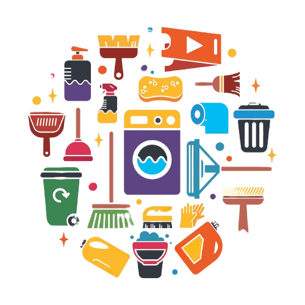

10 ЛЕТ
РАБОТЫ И ОПЫТА В ЭТОЙ СФЕРЕ УСЛУГ
.png)
ДОСТУПНЫЕ
ЦЕНЫ И ВЫСОКОЕ КАЧЕСТВО
ОБРАТНАЯ
СВЯЗЬ С КЛИЕНТАМИ
:max_bytes(150000):strip_icc()/put-together-a-perfect-guest-room-1976987-hero-223e3e8f697e4b13b62ad4fe898d492d.jpg)
Генеральная уборка
- Протереть зеркала и все доступные поверхности,а так же выключатели резетки,шкафчики с внутренней и внешней стороны,
- Помыть пол и плинтуса, а так же фасад мебели и техники, душевую кабину или ванную,
- Почистить и продезенфицировать: раковины, краны и сместители, унитаз,
- Почистить кухонный фартух и варочную панель.
:max_bytes(150000):strip_icc()/PAinteriors-7-cafe9c2bd6be4823b9345e591e4f367f.jpg)
Уборка после квартирантов
- Протереть зеркала и все доступные поверхности,а так же выключатели резетки,шкафчики с внутренней и внешней стороны
- Помыть пол и плинтуса, а так же фасад мебели и техники, душевую кабину или ванную
- Почистить и продезенфицировать: раковины, краны и сместители, унитаз
- Почистить кухонный фартух и варочную панель
- Вынести мусор и проветрить помещение
- Протереть дверне блоки и радиаторы
- Застелить кровать и разложить все вещи по местам

Еженедельная уборка
- Протереть зеркала и все доступные поверхности,а так же выключатели резетки
- Помыть пол и плинтуса, душевую кабину или ванную
- Почистить и продезенфицировать: раковины, краны и сместители, унитаз
- Протереть кухонный фартух и варочную панель

Поверхностная уборка
- Протереть зеркала и все доступные поверхности,а так же выключатели резетки
- Помыть пол и плинтуса, душевую кабину или ванную
- Почистить и продезенфицировать: раковины, краны и сместители, унитаз
- Протереть кухонный фартух и варочную панель

Уборка после праздников
- Обязательное мытьё полов,плинтусов(если есть ковровые покрытия - попылесосить)
- Протереть зеркала и все доступные поверхности,а так же выключатели, резетки и дверные ручки
- Расстановка по местам мебели и вещей
- Выведение всех возможных пятен и посторонних запахов
- Вынос мусора и декораций
- В ванной обработать дверные ручки и саму ванную
- Мойка и дезинфекция сантехники

Уборка после ремонта
- Мойка окон (стекла, оконные рамы, подоконники, )
- Мытьё пола и плинтусов
- Наведению чистоты в санузлах ( стены, пол, сантехнику, осветительные приборы, душевые кабинки, зеркала и ванную мебель)
- Сухая чистка стен
- Очистке радиаторов, розеток, выключателей и осветительных приборов
- Покрытиям, требующим деликатного отношения (используем мягкую ткань и мягкие насадки)
- Протирка мебели от послестроительной пыли
- Вынос мусора
Генеральная уборка
- Протереть зеркала и все доступные поверхности,а так же выключатели резетки,шкафчики с внутренней и внешней стороны...
Уборка после квартирантов
- Протереть зеркала и все доступные поверхности,а так же выключатели резетки...
Еженедельная уборка
- Протереть зеркала и все доступные поверхности,а так же выключатели резетки,шкафчики с внутренней и внешней стороны...